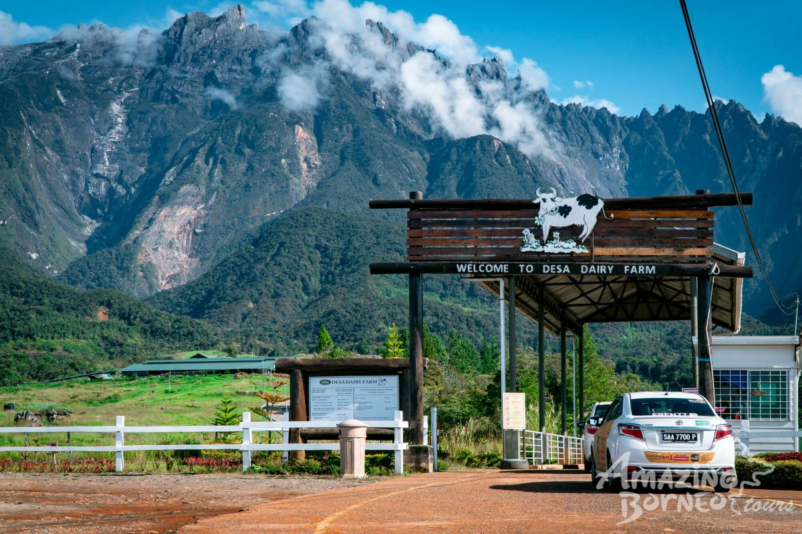
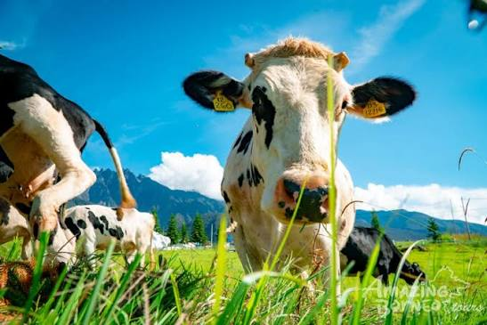
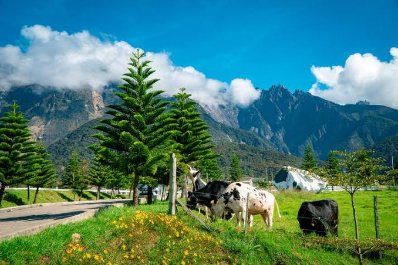

Tentang Desa Dairy Farm
Desa Dairy Farm terletak di Kundasang, kaki Gunung Kinabalu. Ladang tenusu seluas 199 hektar ini sering dijuluki "New Zealand Sabah" kerana pemandangan bukit hijau, udara sejuk dan ladang yang luas sangat mirip dengan negara New Zealand.
Di sini anda boleh melihat sendiri proses penghasilan susu segar, memberi makan lembu, dan menikmati pelbagai produk tenusu yang dihasilkan terus dari ladang. Suhu di sini sekitar 16°C - 20°C sepanjang tahun, sangat menyegarkan.

Aktiviti Menarik
1. Sesi Memberi Susu Anak Lembu: Waktu 10.00 pagi & 3.00 petang. Pengalaman paling popular.
2. Pemerahan Susu: Lihat cara lembu diperah secara moden di bilik tenusu.
3. Produk Tenusu Segar: Cuba aiskrim, yogurt, gelato dan susu segar di kafe.
4. Bergambar : Latar belakang Gunung Kinabalu + ladang hijau = spot foto terbaik.
5. Kedai Cenderamata: Beli coklat, keju dan produk tenusu sebagai buah tangan.
Waktu Operasi & Yuran
Waktu: 8.30 pagi - 5.30 petang. Setiap hari termasuk cuti umum.
Yuran Masuk: Dewasa RM5, Kanak-kanak RM2
Sesi Anak Lembu: 10.00 pagi dan 3.00 petang sahaja
Video Pemandangan
Galeri Gambar



Maklumat Pantas
- Lokasi: Kundasang, Ranau, Sabah
- Ketinggian: 1500m dari aras laut
- Jarak: 2 jam dari Kota Kinabalu
- Suhu: 16°C - 20°C
- Masa Terbaik: Pagi & Petang
Kemudahan
- Tempat Letak Kereta Percuma
- Kafe & Restoran
- Tandas Awam
- Kedai Cenderamata
- Mesra Keluarga
Tips Pelancong
- Bawa jaket sejuk
- Datang awal untuk elak ramai
- Jangan lepaskan sesi anak lembu
- Bawa duit tunai untuk beli produk